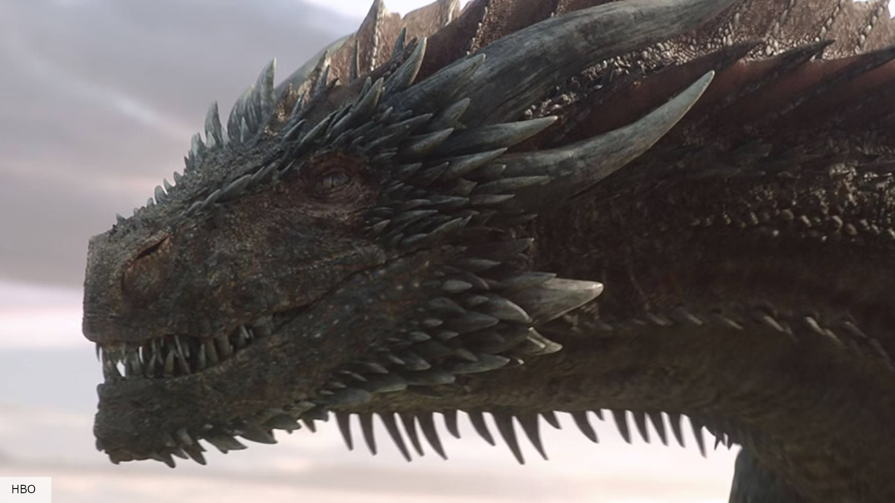
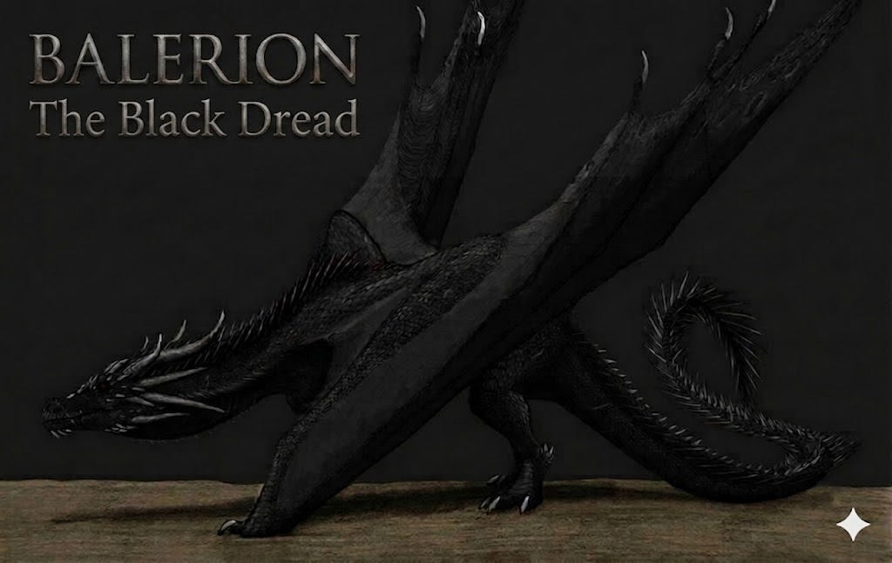

Balerion
"El Terror Negro"

"La sombra que trajo la noche al mundo y forjó el destino de los reyes."
- Jinetes: Aegon I, Maegor I, Viserys I.
- Edad: 200 años aproximadamente.
- Muerte: Fallecido por vejez.
Descripción: Fue el dragón más grande y antiguo de la dinastía. Sus escamas, alas y hasta su aliento ígneo eran de un negro azabache absoluto. Su tamaño era tan colosal que su sombra podía cubrir ciudades enteras bajo su vuelo. Poseía una fisonomía robusta y masiva, con cuernos gruesos y una mandíbula capaz de tragar un mamut.
Historia: Fue el último superviviente del Feudo Franco de Valyria. Llevó a Aegon el Conquistador a forjar los Siete Reinos. Un gran misterio lo rodea: tras desaparecer un año con la princesa Aerea, regresó a Desembarco del Rey con heridas sangrantes de nueve metros de largo, sugiriendo que algo en las ruinas de Valyria fue capaz de herir incluso al Terror Negro.